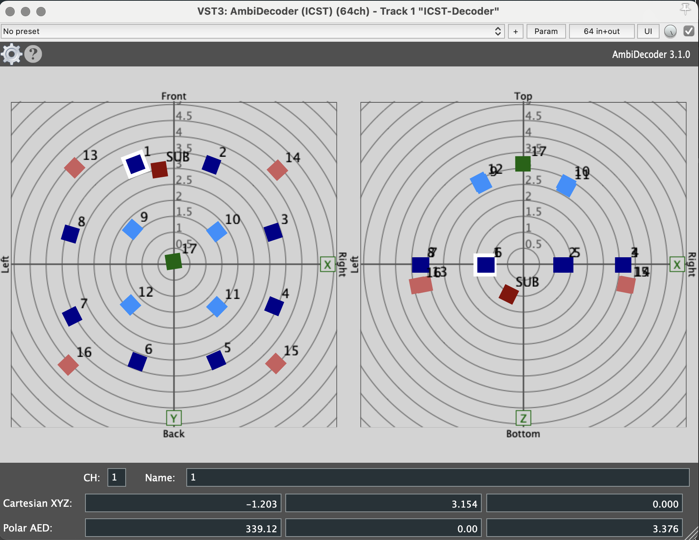
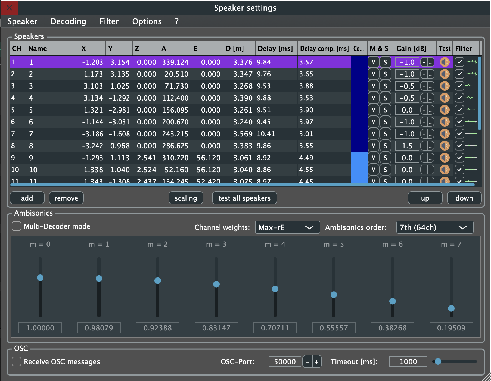
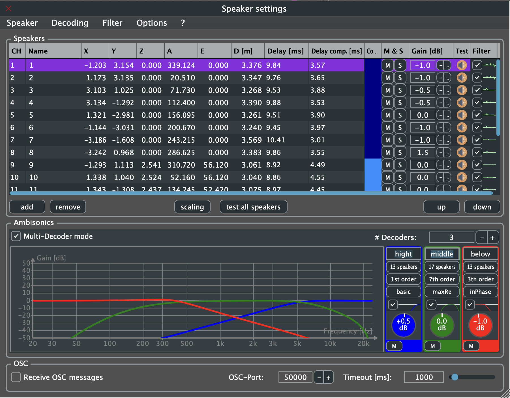

ICST Kompositionsstudio Ambisonics Setting
Institute for Computer Music and Sound Technology / (ICST) Zurich University of the Arts
Ambisonics - speaker - setting and coordinates Example for „ICST_AmbiDecoder 3.1.0" VST3 (2025)
The Studio Room is nearly 7m length, 7m bright and 7m hight.
 Speaker-Coordinates for the “ICST Composer Studio”
Speaker-Coordinates for the “ICST Composer Studio”

Coordinate:

Multi-Decoder-Setting (example)

Speakers 1 - 17 –> channels 1- 17 (Speaker 17 = voice of God) Sub/LFE –> channel 18
ICST Ambisonics Plugins Dokumentation:
Downloads: ICST Kompositionsstudio
©2025 ICST